1.
創新科技發想階段 (Ideation
Stage)
⭐️ AI 攝影助手 - 解決 AI 圖像創作著作權歸屬的新方法
市場痛點與情境
現狀描述：AI生圖的作品過往沒有受到著作權的保護，需要有人類實質貢獻才有版權，且商業使用可能有侵權的風險
創新科技概念
核心構想：相機或手機搭載 AI 攝影助理 APP，相機腳架架好後，限時10秒，由 AI 自動捕捉畫面與影像辨識，AI會分析構圖、RGB
Channel、HSL、光影明暗、景深、色彩與視覺平衡、捕捉物的動態與位置、前景中景背景的配置等等資訊來生成照片。這種 AI 生成圖的方式無需考慮著作權歸屬問題，應為創作者所有。
使用者價值與商業潛力
用戶效益：
假設 10 秒內生成 5 個作品，其中 2 個作品是作者滿意的，作者可以將作品上傳至雲端，包含前述 AI
自動捕捉畫面與影像辨識的參數(這裡的參數即風格檔)。當作者上傳越多作品，就可以建立作者
A
喜好風格的參數，並可以分享給作者B，作者 B 也可以使用作者 A 的參數進行創作但需要付費(平台也要分潤)。
很快的可以建立攝影師的雲端資料庫，讓大家可以付費下載風格檔，並進行更多元或大師級的圖像創作。
⭐️ 跟車系統 - 解決跟車安全性問題，同步多台車地圖導引路線
市場痛點與情境
現狀描述：汽車跟車是一個需要高度集中力的駕駛行為，往往會因為紅燈或是前方來車插入，導致跟車失敗，駕駛要重新配速與肉眼確認是否跟車成功，來來回回可能會花很多時間在確認上與產生分散注意力的風險。
創新科技概念
核心構想：可以在車上觸控板的地圖應用程式裡標示跟車與被跟車的車輛位置，並提供目前兩台車的距離、車速、油量、與導航路線同步、語音溝通，這可以去掉肉眼確認的問題，並讓駕駛專心開車提升安全性。
使用者價值與商業潛力
用戶效益：
同步行進的路線讓駕駛更容易掌握同伴的車況，在跟車上更為安全。使用跟車APP需要下載軟體，該APP可以內置多元的付費功能，例如即時路況分析、即時車禍地點資訊提供、鄰近景點與美食(廣告商提供)等等。可以邀夥伴一起吃美食，使用者只要在觸控面板點選美食，即會重新規劃路線並將路線同步到所有夥伴的觸控螢幕上
⭐️ (運動科技) 音樂遊戲 DDR 踏板再利用 - 多元數位內容整合踏板
市場痛點與情境
現狀描述：
近年來運動科技興起，遊戲化的運動體驗是趨勢，早期音樂遊戲 Dance Dance Revolution
曾是風靡全球的類運動型遊戲；但隨著時間流逝，可能是遊戲的遊戲介面或是玩法已經不感興趣，遊玩人數也跟著下滑。
創新科技概念
核心構想：針對數位遊戲內容有更多元與變化性，可以採用一些簡單的遊戲與 DDR 踏板進行整合。例如，小蜜蜂、俄羅斯方塊，搭配踏板進行操作，對使用者來講是全新體驗
使用者價值與商業潛力
用戶效益：
針對宅在家的族群有新的運動遊玩方式，創造下一波宅經濟。而數位內容的多元性，可保持玩家的新鮮感，並願意買單。
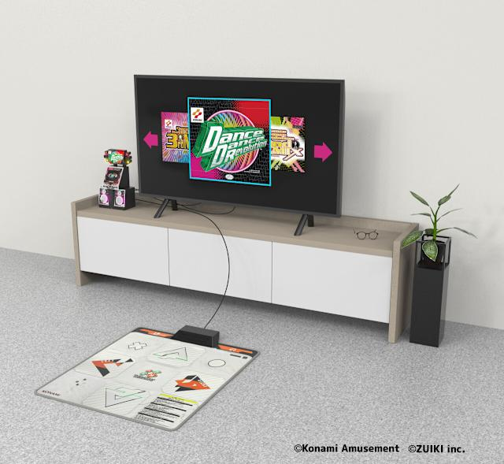
2. 概念設計作品
(Concept
Design)
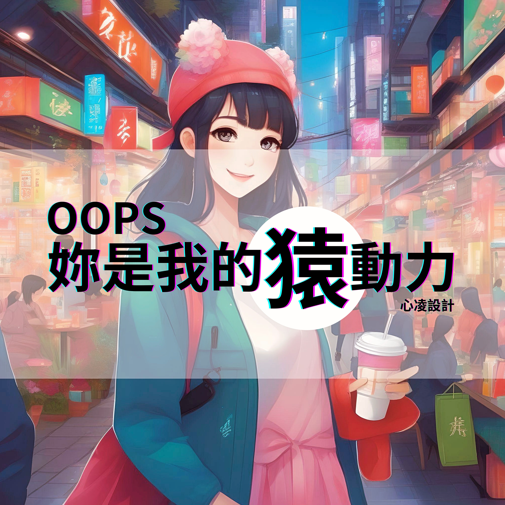
⭐️ Oops 妳是我的猿動力情趣抱枕
說明：
一字多意的諧音梗在台灣非常流行，這也可以成為 Slogan 的設計元素。你是我的『猿』動力原本是你是我的『原』動力，『猿』在此表達出幾個意思：
1.『原』動力 - 產生動力與事物活力的源頭
2.『猿』動力 - 充滿野性與情趣的用詞，十分詼諧
抱枕的設計初衷是因應少字化的趨勢，透過傳遞枕頭來提醒男女該運動了
3. 平面作品 (Visual Design) 超連結點我


4. 攝影作品 (Photography) 超連結點我


5. 程式作品 (Coding)
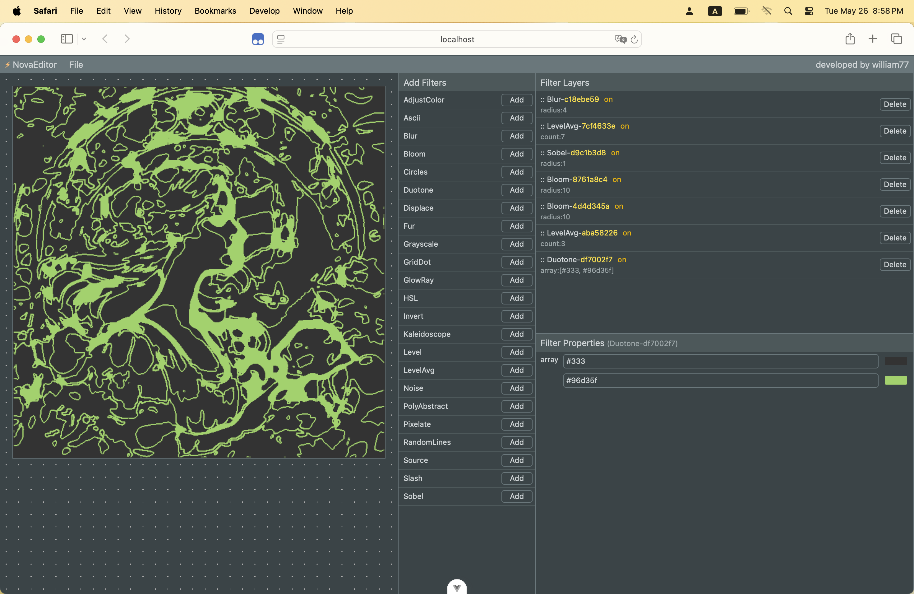
⭐️ 藝術濾鏡軟體 NovaEditor
說明：
A. 主畫布
B. 濾鏡選擇區
C. 圖層區
D. 濾鏡參數編輯區
透過各式濾鏡的疊合，將原圖進行效果處理，產生新藝術視覺風格
優勢是可以快速生成創作
開發費時 1~2 年 (含研究與探索)
前後對比 ->
前後對比 ->
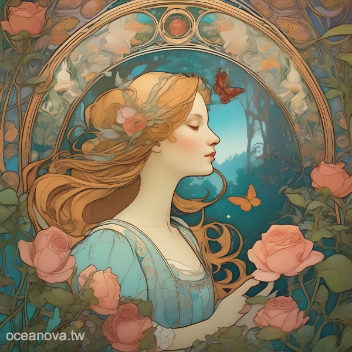
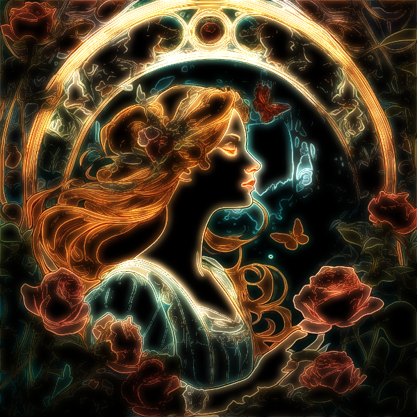
萬花筒 ->
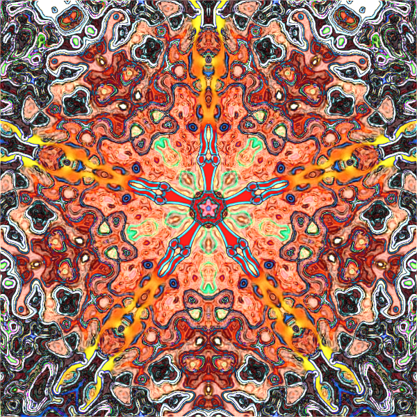
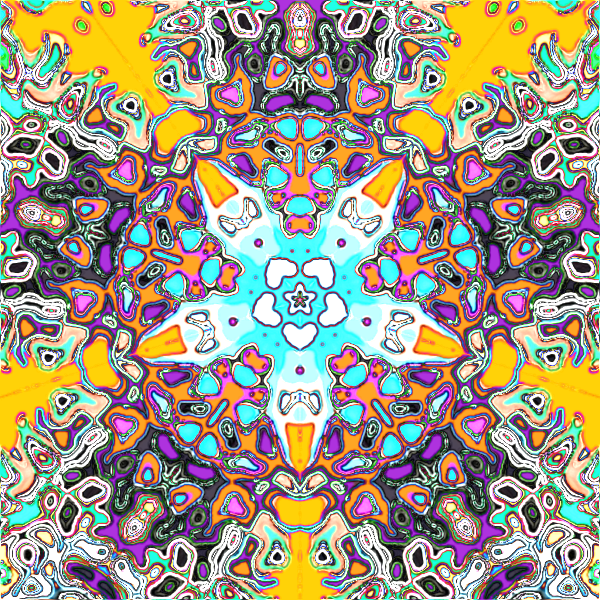
實體輸出 ->
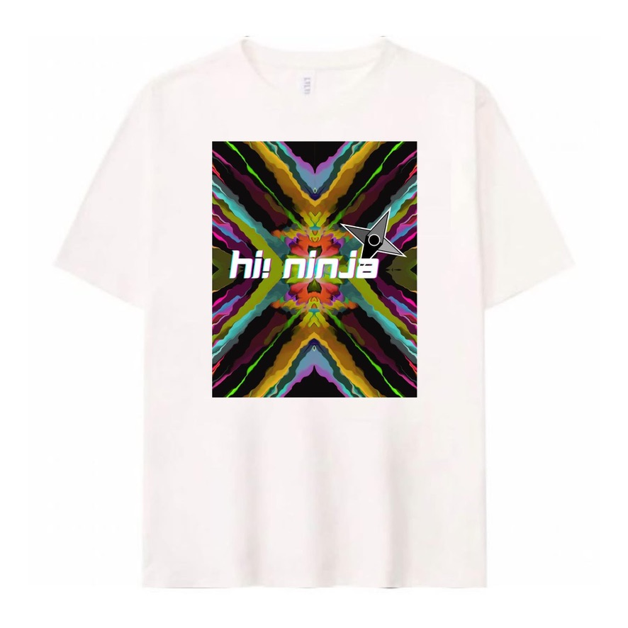
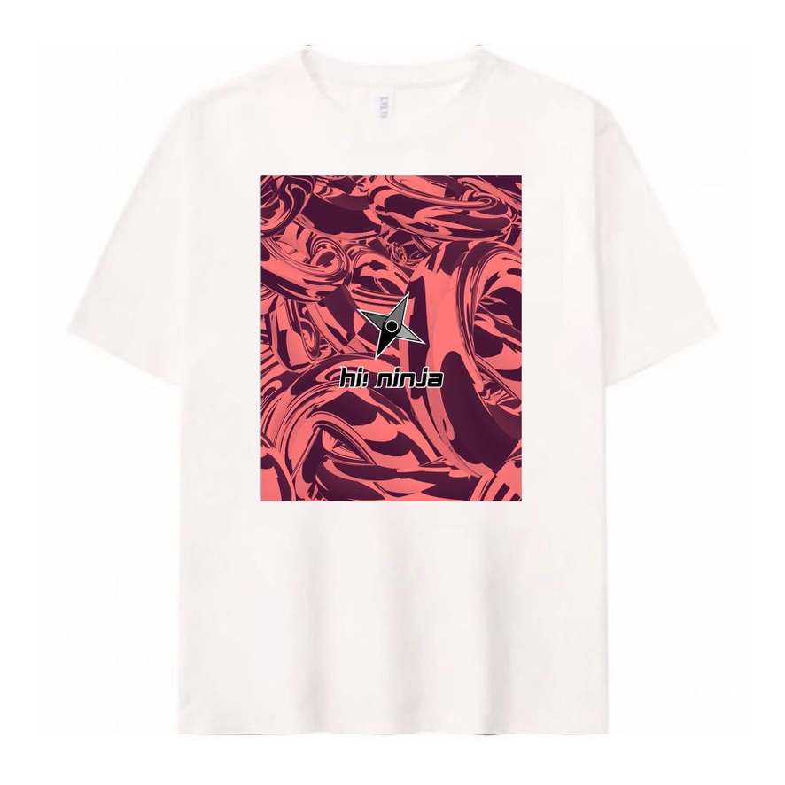
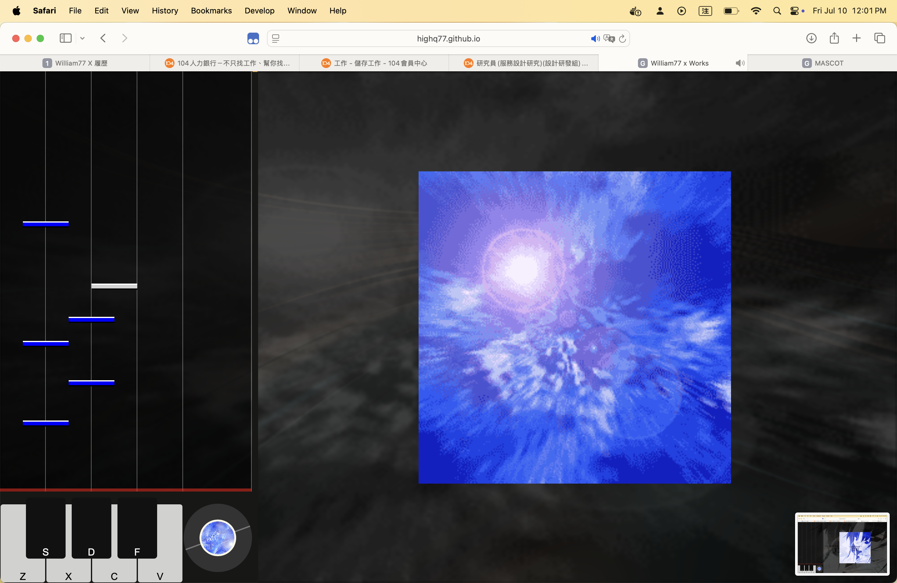
⭐️ 音樂遊戲展示 Pro Beat
說明：
節奏 DJ 音樂遊戲的 prototype (超連結點我)
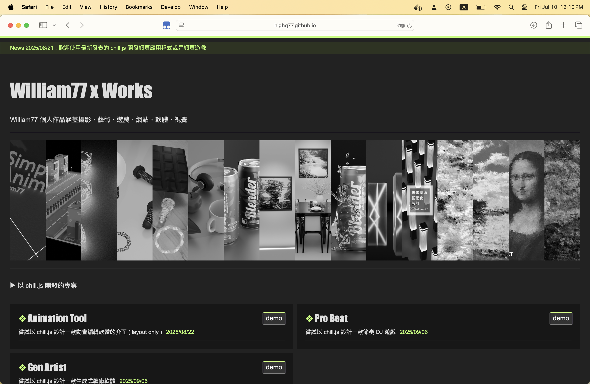
⭐️ William77 x Works
說明：
29 個作品 (超連結點我)